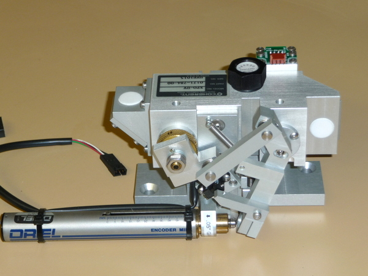

An optical parametric oscillator (OPO) is a source of coherent,monochromatic light.
From a laser wave pump frequency ωp , an OPO produced two waves of lower frequency:
the signal at ωs and complementary to ωc (sometimes called idler ).
Conservation of energy requires that ωp = ωs + ωc .
The frequency conversion from the pump to the two generated waves is through a nonlinear optical interaction.
The light emitted by the OPOs can extend fromultraviolet at far infrared ,continuously or in pulses of varying durations ( microsecond to femtosecond ).
OPOs are mainly used to produce wavelengths where lasers are lacking ,or where very high tunability is needed.

An OPO consists of two essential elements:
a nonlinear medium, at the origin of the frequency conversion performed by the OPO. This medium creates a non-linear gain for signal and complementary waves. This medium is often a non-linear crystal , such as lithium niobate .
an optical cavity, generally consisting of two highly reflective mirrors (in the continuous case) located on either side of the amplifying medium. The role of the optical cavity is to oscillate the radiation, and thus to allow its amplification by successive passages in the non-linear medium. On the other hand, this cavity necessarily introduces losses for the oscillating waves.
One of the main features of an OCT is its tunability . Indeed, the frequencies of the waves generated can be adjusted continuously by changing the phase agreement between the three waves. In practice, this amounts to turning a nonlinear crystal around a particular axis, or to change its temperature.
Another particular characteristic of OPOs is the coherence and the spectral width of the waves generated. Indeed, an OPO can be pumped only by a coherent optical beam, in practice that of a laser or another OPO, and energy transfer is instantaneous. The pump therefore transfers part of its phase and its spectral characteristics to the waves generated. In a simply resonant OPO, the oscillating wave can thus have a very fine spectral width (a few kHz), the impurities being transmitted to the second wave. On the other hand, below or near the oscillation threshold, the generated waves have interesting quantum properties ...
OPOs are often used to produce wavelengths that are inaccessible with existing lasers, particularly in the mid- infrared (around 4 μm) or far- infrared (around 10 μm). OPOs are also interesting when the wavelength must be able to be changed in real time over a wide range (10 nm or more).
The COHERENT OPO is the XPO-UV model from the COHERENT INFINITY laser which allows to obtain all wavelengths between 210 and 600nm by pumping it with 337nm from a 1 MW nitrogen laser.
The linear encoded motor (ORIEL) allows to vary the angle of the BBO and mirrors forming a double-pass cavity by means of the complex system of rods.
This experience will be done soon!